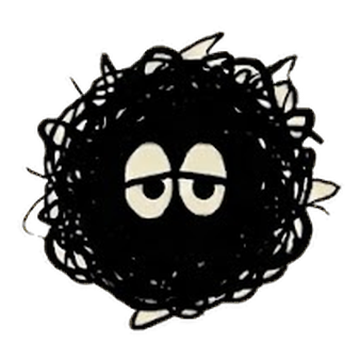
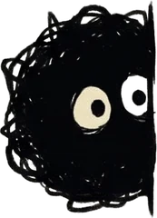

0 / 100
개인정보는 가린 채 익명으로 보일 수 있어요.
아래로 끌어서 버리기
계속 신경 쓰이는 생각들,
여기 꺼내 놓아 보세요.

별거 아닌 이유를 한 번 듣고,
적은 종이째 구겨서 버리는 곳이에요.
개인정보는 가린 채 익명으로 보일 수 있어요.
털실 하나를 따라가면서, 이 앱이 하는 일을 보여 드릴게요.
친구한테 하루 동안 연락이 없다
있었던 일은 하나인데, 생각이 하나둘 엉겨 붙으면 실제보다 크고 무거워 보여요.
이 앱의 걱정들은 엉킨 털실을 뒤집어쓰고 있어요. 털실을 걷어 내면 안에는 작은 몸 하나뿐이에요.
무섭거나 슬픈 그림 대신 동글동글하게 그린 건, 걱정을 너무 무겁게 들고 있지 않았으면 해서예요.

연락이 없는 거지, 잘못했다는 말을 들은 건 아니에요. 답이 늦는 건 보통 상대 쪽 사정일 때가 많거든요. 하루쯤 뒤에 가볍게 한 줄 보내 보면 돼요.
적어 두면, 남의 일을 보듯 있었던 일과 엉겨 붙은 생각을 나눠 드려요. 할 만한 게 있으면 딱 하나만 같이요.
위로보다 사실을 먼저 말해요. 별거 아니라고 정해 주는 게 아니라, 읽고 나서 스스로 그렇게 느꼈으면 해서요. 아직 걸리는 게 남았으면 한 번 더 물어볼 수 있어요.
다 봤으면 종이째 구겨서 버려요. 엉킨 털실도 한 가닥 풀려요.
사실은 별거 아니었네.
나만 이런 게 아니었네.
적은 고민은 이름 같은 정보를 가린 채 익명으로 고민 나눔터에 놓여요. 다른 사람 고민을 둘러보다 보면, 다들 비슷한 걸로 맴돈다는 걸 알게 돼요.
공감되는 고민엔 하트를 눌러 주세요. 누가 눌렀는지는 아무도 몰라요. 무거운 이야기나 위험해 보이는 글은 나눔터에 올리지 않아요.
테스트 버전이에요. 적은 글은 저장하지 않아요.